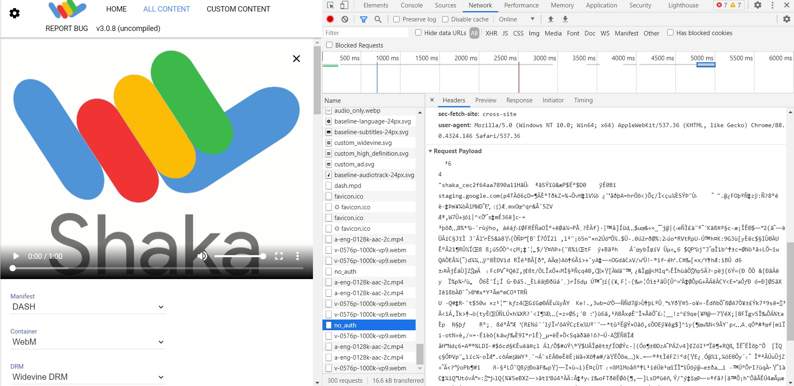
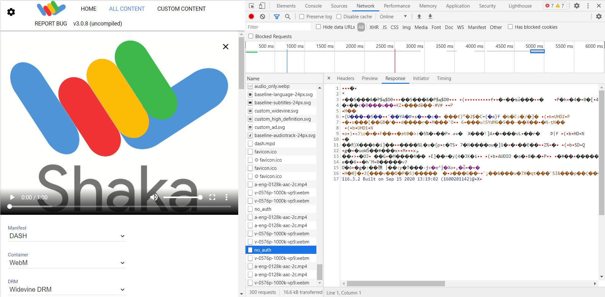
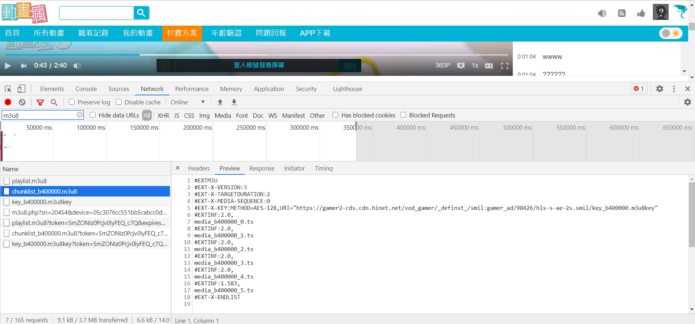

最近工作上有碰到 AES 和 DRM
雖然是使用別人的服務
但還是想稍微了解一下運作的方式
AES 與 DRM 的差別
AES 是一種加密的方法，它可以算是廣義的 DRM
缺點是不能驗證播放端是誰，只要有 key 就可以解鎖
就像有些會員卡認卡不認人，大家可以都拿同一張卡取得優惠
但 DRM 不一樣
除了 key 還會檢查你發出的 request
就像你打電話給信用卡客服
客服會問你身分證和畢業於哪個國小一樣
DRM 如何運作
這張 流程圖 大概說明了 DRM 如何運作
- 將原始檔上傳到雲端
- 轉檔 (DASH, HLS)
- 加密 (Widevine, Fairplay, PlayReady)
- 儲存
- 客戶端點擊播放，DRM Server 驗證你的身分
- DRM Server 給客戶端解密鑰匙並順利播放影片
如果把 3~6 步驟講更詳細一點:
- OTT 跟 DRM 供應商申請 License 後，拿到鑰匙來加密檔案
- 客戶端點擊播放鈕
- OTT Server 驗證此客戶有沒有權利看 (有沒有登入會員或付費等)
- 驗證通過就給 token，接著去 CDN 拿檔案回來
- DRM Server 檢查客戶端發出的 DRM License Request
- 驗證通過就給客戶解密鑰匙，讓影片順利播放
瀏覽器的 DRM
若要瀏覽器能夠支援 DRM，就要支援 EME
透過 EME 觸發 CDM
就能把 Lincese Requst 送去 DRM Server 做驗證
因為不同瀏覽器支援不同的 DRM
所以為了確保任何一個平台都能觀看影片
需要使用多種的 DRM (Multi-DRM)
目前主流的 DRM 系統如下
- Widevine (Google)
- Fairplay (Apple)
- PlayReady (Microsoft)
通常
- macOS, iOS 和 Safari 使用 HLS 和 FairPlay
- Firefox, Chrome 使用 DASH 和 Widevine
- Windows, Edge 使用 DASH 和 PlayReady
所以先決定服務要支援什麼平台
再根據平台支援的 DRM 去決定影片格式
更詳細的支援列表可 看這裡
DRM 的費用
MAL (Monthly Active Licenses) 是 DRM 計費的方法之一
也就是一個月裡發的 linceses 數量
這篇 文章 介紹了 DRM 的計算方式
通常 MAL 是根據用戶數量和播放次數來計算
但有時候會有例外:
- A 用戶在兩個設備上看同一支影片，要兩個 license
- A 用戶在同個設備播放同支影片，但在不同時間播放，也要兩個 license (每個 license 僅有一段許可時間)
- 影片的視訊和音訊檔案是分開的，也要兩個 license
MAL = 月活耀用戶 x (播放數量 + 下載數量)
假設我們有
- 一萬個月活耀用戶
- 一個用戶一個月看八個影片
- 一個用戶一個月下載兩個影片
|
|
每個 license 的費用乘以 MAL 數量就可以算出月費
每一家的 license 費用可能不同
如果以 PallyCon Multi DRM Cloud 的定價來計算
它有個基本 20,000 MAL 的量是 $500
我們的 10,000 MAL 剛好沒有超過基本量
所以月費就是 $500
那如果是 100,000 MAL
扣除 20,000 MAL 基本費，還有 80,000 MAL 的量
定價表有個 80,000 MAL 的級距
每 100 個 licenses 要 $0.5
所以月費是
|
|
那如果是 1,000,000 MAL
扣除 20,000 MAL 基本費，還有 980,000 MAL
980,000 扣除 80,000 級距的量還有 900,000 MAL
900,000 扣除 400,000 級距的量還有 500,000 MAL
500,000 扣除 500,000 級距的量等於 0
所以根據每個級距的費用，月費是
|
|
如何驗證 DRM
DRM 沒有測試環境
且瀏覽器的網址必須是 https://，不能用 localhost
這是因為驗證時，瀏覽器需要跟 DRM Server 連線
所以我們測試跟觀眾使用服務一樣，都是要算錢的！
不過～
網路上有一個免費的 DRM Demo
就是 Shaka Player
沒加密 Demo
請點擊這個 影片
先打開 DevTools > Network
接著按播放
可以看到載入很多 video 和 audio 的檔案
任選一個 video 點右鍵 > Open in new tab
直接可以播，所以代表沒加密
有加密 Demo
請點擊這個 影片
一樣任選一個 video 點右鍵 > Open in new tab
雖然有時間軸，但畫面一片黑
因為這個新分頁沒有給 lincese request
所以檔案有下載下來，但內容無法播放
就像你拿到一個裝滿錢的保險箱卻打不開它
回來 Shaka Player 的 Network Console
有一個 no_auth 的 request
Headers 裡的 Request Payload 有一堆亂碼
這些會送去給 DRM Server 看

然後 DRM Server 的 Response 也回傳了一堆亂碼給瀏覽器

總結 DRM 的驗證過程
- 瀏覽器透過 EME 驅動 CDM 送出 request 給 DRM Server
- DRM Server response 解密的鑰匙
- CDM 解密影片
如果沒有以上這些動作
就播不出影片了～
AES 實例
現在很多 OTT 都有使用 AES 加密
試著找一個來看看
一樣先開啟 DevTools 的 Network
然後播放任一影片
任選一個 .ts > Open in new tab
然後 .ts 就被下載下來，但是我們卻播放不了
回到 DevTools 的 Network，搜尋 m3u8
有一個 chunklist_b400000.m3u8
在第五行顯示 #EXT-X-KEY:METHOD=AES-128
這個就代表它使用了 AES-128 加密～

如果想要自己製作 AES 加密
可以使用 openssl 和 ffmpeg 來完成
詳細內容請參考 這篇文章
要用 AES 還是 DRM
有錢用 DRM，沒錢用 AES
如果片商要求要有 DRM
那就一定要花錢了
至於其他的
就使用 AES 吧~
不過 AES 也沒很安全
因為在下載檔案時，同時能取得 key
只要在本地端解密就能播放了
所以就算 AES 會固定時間換 key
但他早就用舊的 key 解完了
不像 DRM 要透過瀏覽器的行為
與第三方伺服器連線來驗證